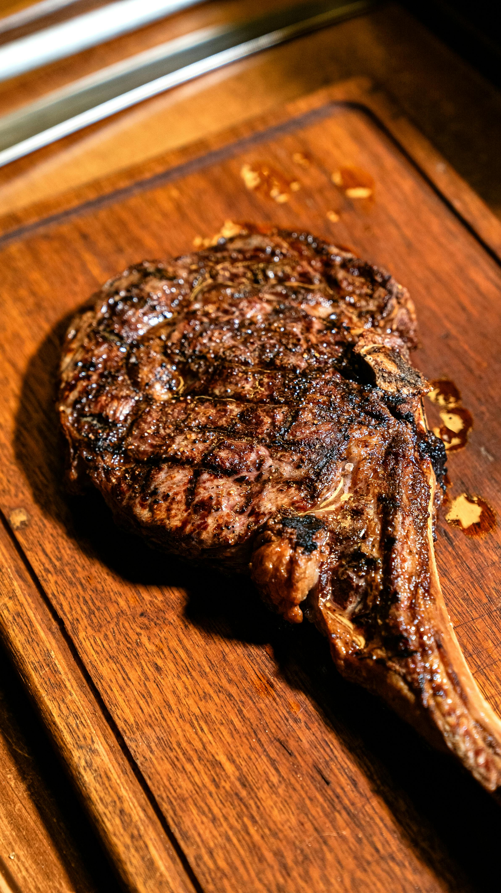

Pan Seared Ribeye Steak

Description
A thick-cut ribeye steak is prized for its heavy marbling, which melts during the cooking process to create an incredibly tender and flavorful experience. This recipe focuses on the "reverse sear" or high-heat pan sear to achieve a perfect edge-to-edge pink center.
To get the best results, allow the steak to reach room temperature before it hits the pan. This prevents the outside from burning before the inside reaches your desired level of doneness.
Ingredients
- 1 Ribeye steak (1.5 to 2 inches thick, approx. 1 lb to 1.25 lbs)
- 1.5 tbsp Coarse sea salt (or Kosher salt)
- 1 tbsp Freshly cracked black pepper
- 2 tbsp Avocado oil or Grape seed oil (high-smoke point oils)
- 3 tbsp Unsalted high-quality butter
- 3 cloves Garlic, smashed but left whole
- 4 sprigs Fresh thyme
- 1 sprig Fresh rosemary
Steps to Complete Dish
- Season the steak heavily with salt and pepper on all sides, including the edges, at least 45 minutes before cooking.
- Heat a heavy cast-iron skillet over high heat for 5 minutes until it is ripping hot.
- Add the oil to the pan; it should shimmer and smoke almost instantly.
- Carefully lay the steak into the pan, laying it away from you to avoid oil splatters.
- Sear for 3–4 minutes without moving the steak to develop a thick, dark-brown crust.
- Flip the steak and immediately add the butter, garlic, thyme, and rosemary to the skillet.
- As the butter foams, tilt the pan and spoon the flavored butter over the steak continuously for another 3 minutes (basting).
- Check for doneness using a meat thermometer: 130°F for medium-rare or 140°F for medium.
- Transfer the steak to a warm plate or cutting board and pour the remaining pan butter over it; let it rest for a full 10 minutes before slicing against the grain.
Home